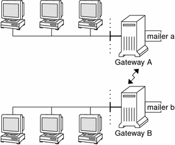

Previous
Previous
Mailbox Files
A mailbox is a file that is the final destination for email messages. The name of the mailbox can be the user name or the identity of a specific function, such as the postmaster. Mailboxes are in the /var/mail/username file, which can exist either on the user's local system or on a remote mail server. In either instance, the mailbox is on the system to which the mail is delivered.
Mail should always be delivered to a local file system so that the user agent can pull mail from the mail spool and store it readily in the local mailbox. Do not use NFS-mounted file systems as the destination for a user's mailbox. Specifically, do not direct mail to a mail client that is mounting the /var/mail file system from a remote server. Mail for the user, in this instance, should be addressed to the mail server and not to the client host name. NFS-mounted file systems can cause problems with mail delivery and handling.
The /etc/mail/aliases file and name services such as NIS and NIS+ provide mechanisms for creating aliases for electronic mail addresses. So, users do not need to know the precise local name of a user's mailbox.
The following table shows some common naming conventions for special-purpose mailboxes.
Table 14-8 Conventions for the Format of Mailbox NamesStarting with sendmail version 8, the envelope sender for mail that is sent to a group alias has been changed to the address that is expanded from the owner alias, if an owner alias exists. This change enables any mail errors to be sent to the alias owner, rather than being returned to the sender. With this change, users notice that mail that was sent to an alias looks as if the mail came from the alias owner, when delivered. The following alias format helps with some of the problems that are associated with this change.
mygroup: :include:/pathname/mygroup.list owner-mygroup: mygroup-request mygroup-request: sandys, ignatz
In this example, the mygroup alias is the actual mail alias for the group. The owner-mygroup alias receives error messages. The mygroup-request alias should be used for administrative requests. This structure means that in mail sent to the mygroup alias, the envelope sender changes to mygroup-request.
Mail Aliases
An alias is an alternate name. For email, you can use aliases to assign a mailbox location or to define mailing lists. For a task map, refer to Administering Mail Alias Files (Task Map) in Chapter 13, Mail Services (Tasks). Also, you can refer to Mail Alias Files in this chapter.
For large sites, the mail alias typically defines the location of a mailbox. Providing a mail alias is like providing a room number as part of the address for an individual at a large corporation that occupies multiple rooms. If you do not provide the room number, the mail is delivered to a central address. Without a room number, extra effort is required to determine where within the building the mail is to be delivered. So, the possibility of an error increases. For example, if two people who are named Kevin Smith are in the same building, only one of them might get mail. To correct the problem, each Kevin Smith should have a room number added to his address.
Use domains and location-independent addresses as much as possible when you create mailing lists. To enhance portability and flexibility of alias files, make your alias entries in mailing lists as generic and system independent as possible. For example, if you have a user who is named ignatz on system mars, in domain example.com, create the alias ignatz@example instead of ignatz@mars. If user ignatz changes the name of his system but remains within the example domain, you do not need to update alias files to reflect the change in system name.
When you create alias entries, type one alias per line. You should have only one entry that contains the user's system name. For example, you could create the following entries for user ignatz.
ignatz: iggy.ignatz iggyi: iggy.ignatz iggy.ignatz: ignatz@mars
You can create an alias for local names or domains. For example, an alias entry for user fred, who has a mailbox on the system mars and is in the domain planets, could have this entry in the NIS+ aliases table.
fred: fred@planets
When you create mail lists that include users outside your domain, create the alias with the user name and the domain name. For example, if you have a user who is named smallberries on system privet, in domain example.com, create the alias as smallberries@example.com. The email address of the sender is now automatically translated to a fully qualified domain name when mail goes outside the user's domain.
The following list describes methods for creating and administering mail alias files.
You can create mail aliases for global use in the NIS+ mail_aliases table, the NIS aliases map, or in local /etc/mail/aliases files. You can also create and administer mailing lists that use the same alias files.
Depending on the configuration of your mail services, you can administer aliases by using the NIS or NIS+ name service to maintain a global aliases database. Otherwise, you could update all the local /etc/mail/aliases files to keep the aliases synchronized.
Users can also create and use aliases. Users can create aliases either in their local ~/.mailrc file, which only the user can use, or in their local /etc/mail/aliases file, which anyone can use. Users cannot normally create or administer NIS or NIS+ alias files.
Hardware Components
You can provide the three required elements of mail configuration in the same system or have separate systems provide these elements.
When users are to communicate with networks outside your domain, you must also add a fourth element, a mail gateway. For more information, refer to Mail Gateway. The following sections describe each hardware component.
Mail Host
A mail host is the machine that you designate as the main mail machine on your network. A mail host is the machine to which other systems at the site forward mail that cannot be delivered. You designate a system as a mail host in the hosts database by adding the word mailhost to the right of the IP address in the local /etc/hosts file. Alternately, you can add the word mailhost similarly to the hosts file in the name service. For detailed task information, refer to How to Set Up a Mail Host in Chapter 13, Mail Services (Tasks).
A good candidate for a mail host is a system that is configured as a router from your network to the Internet global network. For more information, refer to Chapter 15, Solaris PPP 4.0 (Overview), Chapter 24, UUCP (Overview), and Configuring an IPv4 Router in System Administration Guide: IP Services. If no systems on your local network have a modem, designate a system as the mail host.
Some sites use standalone machines that are not networked in a time-sharing configuration. Specifically, the standalone machine serves terminals that are attached to its serial ports. You can set up electronic mail for this configuration by designating the standalone system as the mail host of a single-system network. Overview of the Hardware Components in Chapter 12, Mail Services (Overview) provides a figure that shows a typical email configuration.
Mail Server
A mailbox is a single file that contains email for a particular user. Mail is delivered to the system where the user's mailbox resides, which can be on a local machine or a remote server. A mail server is any system that maintains user mailboxes in its /var/mail directory. For task information, refer to How to Set Up a Mail Server in Chapter 13, Mail Services (Tasks).
The mail server routes all mail from a client. When a client sends mail, the mail server puts the mail in a queue for delivery. After the mail is in the queue, a user can reboot or turn off the client without losing those mail messages. When the recipient gets mail from a client, the path in the From line of the message contains the name of the mail server. If the recipient responds, the response goes to the user's mailbox. Good candidates for mail servers are systems that provide a home directory for users or systems that are backed up regularly.
If the mail server is not the user's local system, users in configurations that use NFS software can mount the /var/mail directory by using the /etc/vfstab file, if they have root access. Otherwise, users can use the automounter. If NFS support is not available, users can log in to the server to read their mail.
If users on your network send other types of mail, such as audio files or files from desktop publishing systems, you need to allocate more space on the mail server for mailboxes.
By establishing a mail server for all mailboxes, you can simplify your process of doing backups. Backups can be difficult to do when mail is spread over many systems. The disadvantage of storing many mailboxes on one server is that the server can be a single point of failure for many users. However, the advantages of providing good backups usually make the risk worthwhile.
Mail Client
A mail client is a user of mail services with a mailbox on a mail server. Additionally, the mail client has a mail alias in the /etc/mail/aliases file that points to the location of the mailbox. For task information, refer to How to Set Up a Mail Client in Chapter 13, Mail Services (Tasks).
Mail Gateway
The mail gateway is a machine that handles connections between networks that run different communications protocols or communications between different networks that use the same protocol. For example, a mail gateway might connect a TCP/IP network to a network that runs the Systems Network Architecture (SNA) protocol suite.
The simplest mail gateway to set up is the mail gateway that connects two networks that use the same protocol or mailer. This system handles mail with an address for which sendmail cannot find a recipient in your domain. If a mail gateway exists, sendmail uses the gateway to send and receive mail outside your domain.
You can set up a mail gateway between two networks that use unmatched mailers, as shown in the next figure. To support this configuration, you must customize the sendmail.cf file on the mail gateway system, which can be a difficult and time-consuming process.
Figure 14-1 Gateway Between Different Communications ProtocolsIf you have a machine that provides connections to the Internet, you can configure that machine as the mail gateway. Carefully consider your site's security needs before you configure a mail gateway. You might need to create a firewall gateway between your corporate network and other networks, and set up that gateway as the mail gateway. For task information, refer to How to Set Up a Mail Gateway in Chapter 13, Mail Services (Tasks).